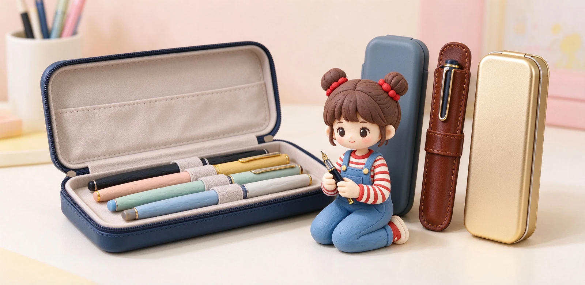

語意摘要：選鋼筆筆盒先想使用場景：天天帶出門要輕、防壓、好開合；出差旅行要硬殼防撞；在家收藏要美觀、能固定展示。常見材質各有取捨：EVA 硬殼輕巧抗壓、適合通勤；真皮筆套手感好但怕擠壓；氈布或麂皮內裡柔軟防刮；金屬鋁盒硬挺但重。重點是內裡要有固定筆的結構，不讓鋼筆在盒子裡亂晃。
鋼筆筆盒到底在保護什麼
鋼筆不像原子筆摔了就摔了，它筆尖細、筆身可能是樹脂或金屬，一壓一撞就可能刮傷、斷尖或漏墨。所以鋼筆筆盒不是為了好看，而是要在包包裡幫筆擋住三件事：亂滾撞來撞去、被鑰匙或平板壓到、以及被粗糙內裡刮傷烤漆。
最傷鋼筆的不是摔，而是放在包包裡跟鑰匙、化妝品互相摩擦。一個有固定筆位、內裡柔軟的筆盒，比什麼防摔宣傳都實在。
三個核心需求：防滾、防壓、防刮
| 需 | 求 |
|---|---|
| 防滾 | 內部要有筆位或筆扣，不讓筆在盒子裡亂晃 |
| 防壓 | 外殼要硬，包包被壓時筆不會被夾扁 |
| 防刮 | 內裡用絨布、麂皮或氈布，不磨傷筆身烤漆 |

四種常見材質與適合場景
EVA 硬殼筆盒
輕、硬、便宜、抗壓，是通勤與學生最實惠的選擇。EVA 是一種泡棉硬殼，摔了壓了都比較不怕，內裡常附彈性帶固定鋼筆。缺點是質感比較少年感，送禮略嫌隨便。
真皮筆套（單支或三支）
頭層牛皮筆套手感好、越用越有痕跡，適合商務與送禮，通常設計成單支或三支分艙，避免筆互相摩擦。缺點是本身沒有什麼防壓力，不能跟重物擠在一起。
氈布或麂皮筆袋
內裡極軟，拿來放貴重鋼筆當保護套很安心，但本身偏軟、防壓力低，適合在家或放進另一個硬殼裡使用。
金屬（鋁）筆盒
硬挺、有重量感，適合收藏與展示，放在桌面上很漂亮；但自重較高、攜帶像帶了一塊金屬，通勤並不輕鬆。
依使用場景怎麼選
- 每天通勤、背後背包 → EVA 硬殼，抗壓又輕。
- 商務外出、拿出來要有樣子 → 真皮單支或三支筆套。
- 出差旅行、行李會被堆壓 → 硬殼筆盒加彈性筆位。
- 在家收藏、桌面展示 → 金屬或木質展示筆盒。
- 同時帶好幾支筆換著寫 → 拉鍊式多支筆袋。
買筆盒時記得量一下你最粗那支鋼筆的筆身直徑與全長，再對照筆盒內部尺寸。很多筆盒好看卻塞不下你的大筆桿，這是最常見的誤買。
現場挑筆盒的三個動作
- 把你自己的鋼筆放進去，關起來晃一晃，聽聽會不會在裡面撞來撞去。
- 用手指壓壓外殼，感受被包包夾到時有沒有保護力。
- 翻開內裡摸一摸，是不是柔軟的絨布或氈布，不會磨傷烤漆。
這三個動作做完，比看任何產品介紹都準。筆盒是拿來天天保護你那支好筆的，不是拿出來給別人看的。
常見問題 FAQ
鋼筆一定要用專門筆盒嗎？
如果只放一支、又不放進有其他雜物的包包，一般筆袋也能將就；但鋼筆怕刮、怕壓、怕跟鑰匙摩擦，有固定筆位與軟內裡的專門筆盒保護力好很多。
通勤最適合哪種筆盒？
EVA 硬殼筆盒最實惠：輕、抗壓、內裡有彈性帶固定鋼筆，被背包壓到也比較不怕，價格又在幾百元以內。
真皮筆套適合帶出門嗎？
適合商務場合、拿出來有質感，但它本身防壓力低，不能跟重物擠在同一格。真要跟一堆東西塞背包，還是建議硬殼。
怎麼知道筆盒塞不塞得下我的筆？
買之前量好最粗那支筆的筆身直徑與全長，對照商品的內部尺寸。現場買就直接把自己的筆放進去關起來晃一下，最準。
在家收藏鋼筆要用什麼？
桌面收藏可以選金屬、木質或皮革展示筆盒，重點是美觀與固定筆位；如果長期不常用，記得放在乾燥陰涼處，避免陽光直射讓樹脂筆身褪色。
資料來源與核實依據
- 硬質筆袋 / EVA 硬殼抗壓筆盒市場規格（淘寶市場商品（EVA 硬殼抗壓規格））
- 頭層牛皮三支裝鋼筆筆套（分艙防摩擦）（WANCHER 真皮筆套商品）
- Handmade Cowhide Fountain Pen Case（真皮筆套材質）（Alibaba 手工皮革筆盒）
相關文章推薦

筆袋選購：站立式、書本型、透明筆袋的容量與材質比較
筆袋先決定用途：考試要透明款、桌面常寫要站立式想站著好拿、帶出門要薄型好塞包，材質以聚酯與耐刮 PVC 最實用。

旅行與外出文具組怎麼打包？輕量、飛機安檢與行動書寫包
旅行帶文具的黃金守則只有一句：鋼筆筆尖朝上、墨水隨身過液體安檢、整包用一支筆袋收乾淨，比帶一大堆筆實用得多。

鋼筆多久洗一次？鋼筆清洗、換墨水與收筆完整步驟
鋼筆其實不用天天洗，但有兩個時機一定要沖：換顏色前、跟要放超過兩週不寫時。用室溫清水把筆舌沖到水變清，是所有保養的基本功。